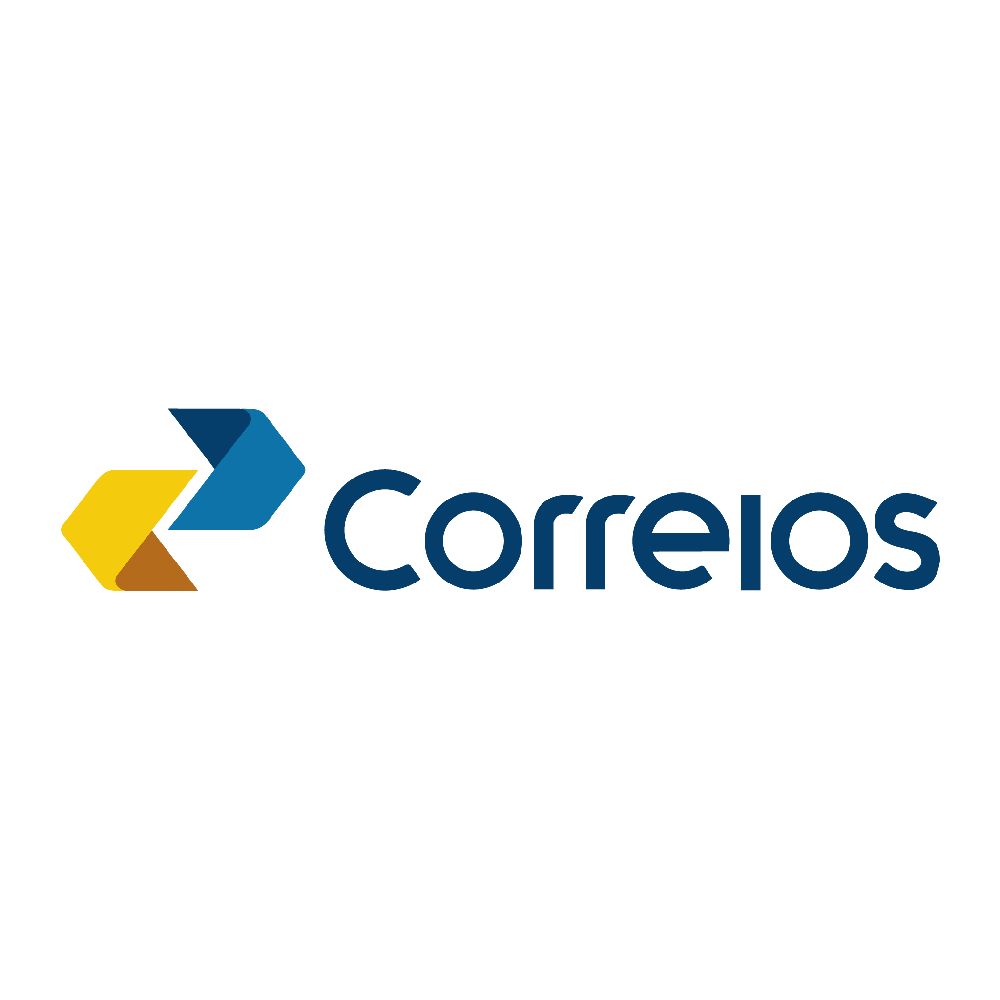

<ion-header [translucent]="true">
  <ion-toolbar color="primary">
    <ion-title>
      RASTREAMENTO DE OBJETOS
    </ion-title>
    
  </ion-toolbar>
  <ion-toolbar color="primary">
    <ion-searchbar animated placeholder="Cód.de rastreio" (ionChange)="localizarObjeto($event)"></ion-searchbar>

  </ion-toolbar>
</ion-header>

<ion-content [fullscreen]="true">


  <ion-list>
    <ion-progress-bar color="danger" [type]="'indeterminate'" *ngIf="showLoader"></ion-progress-bar>
    <ion-item class="ion-text-wrap texto" *ngFor="let evento of eventosCollection">
      {{this.global.date2DMYTime(evento.dtHrCriado)}} - <strong> {{evento.descricao}}</strong>
      <p>{{evento.detalhe}}</p>

    </ion-item>


  </ion-list>


</ion-content>

<ion-footer collapse="fade" class="texto-centralizado">Ayslan Portela &reg;</ion-footer>